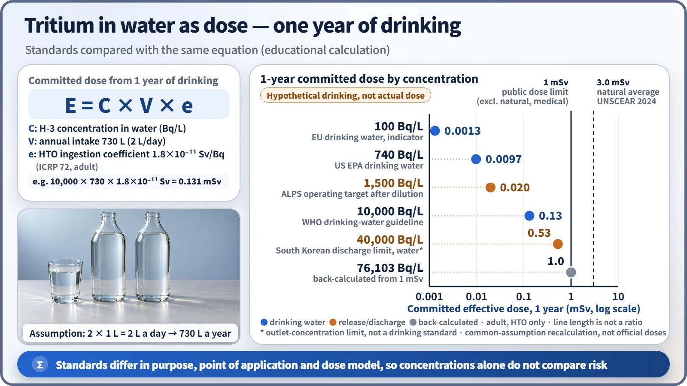
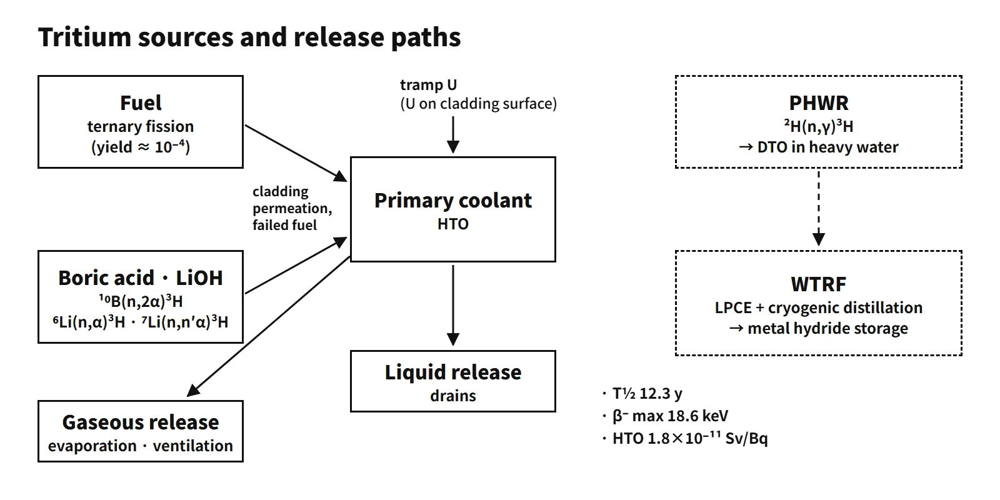

Radiation Protection & Emergency · C-RP-005
Tritium — A Low-Energy Beta Emitter Made from Boron, Lithium and Heavy Water That Treatment Cannot Filter Out
A 12.3-year pure beta emitter that matters only as an internal hazard, produced from boron and lithium in PWRs and from heavy water in PHWRs, and carried as water that treatment cannot separate.
Tritium (³H, T) is the radioactive isotope of hydrogen with one proton and two neutrons. It decays by β⁻ emission to ³He with a half-life of 12.3 years and emits no gamma rays. In nuclear power plants it is produced by neutron reactions with boron, lithium and deuterium in the coolant and by ternary fission; because it exists mostly as water molecules (HTO), ordinary treatment processes cannot remove it.
In short: a low-energy pure beta emitter (β⁻ maximum 18.6 keV), so external exposure is negligible and only internal exposure from ingestion or inhalation of HTO needs to be managed; heavy-water reactors produce tens of times more than light-water reactors.
Principle and mechanism
Nuclear and chemical properties
| Property | Value | Significance |
|---|---|---|
| Half-life | 12.32 years (λ = 0.0563/year) | Accumulating nuclide |
| Beta energy | Maximum 18.6 keV, mean 5.7 keV | Maximum range in water about 6 μm; cannot penetrate the skin's dead layer |
| Specific activity | 3.56×10¹⁴ Bq/g | Calculate directly as λN |
| Chemical forms | HT·T₂ (gas), HTO (tritiated water), OBT (organically bound) | Each form has a different dose coefficient |
| Measurement | Liquid scintillation counter (LSC) | Practically undetectable with a GM counter |
The ICRP dose coefficients (adult) are 1.8×10⁻¹¹ Sv/Bq for HTO ingestion and 4.2×10⁻¹¹ Sv/Bq for OBT ingestion (ICRP 72). Inhalation of HT gas is 1.8×10⁻¹⁵ Sv/Bq, about one ten-thousandth of HTO, because the gas is hardly absorbed in the lungs and only part of it is oxidized in the body. HTO vapour is also absorbed through the skin, so worker assessments apply a factor of about 1.5 to the inhaled amount.
HTO mixes with body water and is distributed uniformly through the whole body, with a biological half-life of about 10 days (3 % becomes OBT with a component of about 40 days). Because it does not concentrate in any particular organ and leaves the body quickly, its dose coefficient is small.
Sources — light-water versus heavy-water reactors
| Reaction | Reactor type | Characteristics |
|---|---|---|
| Ternary fission | Both | Tritium yield about 10⁻⁴ per fission; produced inside the fuel |
| ¹⁰B(n,2α)³H | PWR | Fast-neutron reaction of B-10 in borated water (effective threshold about 1 MeV); main source of coolant tritium |
| ⁷Li(n,n′α)³H | PWR | Threshold about 2.8 MeV. Li-7 comes from the pH-control agent and from the B-10(n,α) reaction |
| ⁶Li(n,α)³H | PWR | Thermal cross section about 940 b → LiOH enriched to 99.9 % or more Li-7 is used |
| ²H(n,γ)³H | PHWR (negligible in LWRs) | Thermal cross section only 0.52 mb, but there are hundreds of tonnes of D₂O moderator and coolant |
The reactions in the table are for pressurized water reactors (PWRs): boron is the main contributor, followed by lithium and fission. In a heavy-water reactor the cross section is small, but the number of deuterium atoms and the thermal neutron flux are large, so production is overwhelmingly greater. Idealizing with zero initial concentration, a constant production rate and no removal or replacement, the moderator concentration builds up as C(t) = Ceq(1 − e−λt). With λ = 0.0563/year, it reaches 43 % of the equilibrium value in 10 years, 68 % in 20 years and 82 % in 30 years. The moderator, which stays in the core longer, is much more concentrated than the coolant; the design condition of one heavy-water reactor moderator tritium removal facility is 10–60 Ci/kg (0.37–2.2 TBq/kg). UNSCEAR 2000 (Table 37) compiled normalized tritium releases for 1995–1997 of 21.4 TBq/GWe·year for PWRs (gas 2.4 + liquid 19) and 670 TBq/GWe·year for heavy-water reactors (gas 330 + liquid 340), a ratio of about 31. This compares releases, not production itself.

How fission tritium reaches the primary system
- Permeation through intact cladding: Zircaloy traps hydrogen as hydrides, so the permeating fraction is small (stainless-steel cladding lets much more through).
- Failed fuel: HT and HTO in the gap escape directly to the coolant through pinholes and cracks.
- Uranium contamination on the cladding surface (tramp uranium): fission products from surface uranium enter the coolant directly by recoil.
Once in the coolant, tritium becomes HTO and is released as liquid and gas through CVCS letdown and drains, evaporation from the containment and spent fuel pool surfaces, and primary-to-secondary leakage. The decontamination factor of liquid waste treatment for H-3 is 1.
What it means in a plant
- Worker protection: in heavy-water reactor buildings and heavy-water handling areas, airborne HTO is the main source of exposure. It is controlled with dryers (vapour recovery), local exhaust and air-supplied protective suits, and internal exposure is monitored by LSC analysis of urine samples (urine concentration ≈ body-water concentration). After an intake, increasing fluid intake speeds up elimination.
- Reduction measures (PWR): Li-7-enriched LiOH, defect-free fuel management, tramp-U control and integral burnable absorbers (in the past, stainless-steel-clad borosilicate glass burnable poison rods showed permeation). Recycling the coolant reduces releases, but the system concentration rises, trading off against worker dose management.
- Removal (PHWR): a heavy-water reactor can operate a tritium removal facility (TRF). Liquid-phase catalytic exchange (LPCE, DTO + D₂ ⇄ D₂O + DT) transfers tritium to the gas phase, cryogenic distillation concentrates it, and it is immobilized and stored as a metal hydride.
- Environmental monitoring: airborne moisture, rainwater, groundwater, seawater and agricultural and marine products (OBT) around plants are analysed regularly. Low-level samples are distilled and counted by LSC; even lower levels use electrolytic enrichment.
Regulatory and design criteria
- Effluent concentration standards: for example, in the United States, 10 CFR 20 Appendix B Table 2 gives 37,000 Bq/L for water and 3,700 Bq/m³ for air; Japan's notified concentration limit is 60,000 Bq/L. For drinking water: WHO 10,000 Bq/L, US EPA 740 Bq/L (20,000 pCi/L), EU 100 Bq/L (screening indicator) and Australia 76,103 Bq/L. The values differ not because the hazard differs but because the reference dose and the point of application differ.
- Fukushima ALPS-treated water: ALPS targets 62 nuclides other than tritium. Since 24 August 2023 the water has been diluted with seawater and discharged at below 1,500 Bq/L of H-3 and below 22 TBq per year. The IAEA Comprehensive Report (4 July 2023) concluded that the approach is "consistent with international safety standards" and that the radiological impact on people and the environment is "negligible", and it stated that reviews would continue throughout the discharge period. Some neighbouring countries, including China, have maintained opposition and restrictions on seafood imports.
Dose comparison calculation (educational)
The committed effective dose from one year of intake is E = C × V × e, with adult drinking-water intake V = 730 L/year (2 L/day) and e = 1.8×10⁻¹¹ Sv/Bq (HTO). Example: 10,000 × 730 × 1.8×10⁻¹¹ = 1.31×10⁻⁴ Sv = 0.131 mSv. The difference from the WHO reference dose of 0.1 mSv comes from the rounding of the guideline concentration.
| Concentration | Meaning | Committed effective dose from 1 year of intake |
|---|---|---|
| 1,500 Bq/L | ALPS operating target after dilution | 0.020 mSv |
| 10,000 Bq/L | WHO guideline (based on 0.1 mSv) | 0.13 mSv |
| 76,103 Bq/L | Reference value back-calculated from 1 mSv/year | 1.0 mSv |
These are hypothetical drinking-water equivalents recalculated with the same coefficient, not actual public doses. Some standards, such as the US EPA value, were set with a different dose model, so the concentration numbers alone cannot compare risk. The world average natural background (about 3.0 mSv per year, UNSCEAR 2024) is an average for comparison; actual public dose is obtained from site-boundary assessments that include dilution and food (OBT) pathways.

Easily confused pairs
| HTO | OBT | HT (gas) | |
|---|---|---|---|
| Form | Water molecule | Bound to organic matter | Hydrogen gas |
| Dose coefficient (ingestion) | 1.8×10⁻¹¹ | 4.2×10⁻¹¹ | Inhalation 1.8×10⁻¹⁵ |
| Retention in the body | About 10 days | 10 days and 40 days, 50 % each | Mostly exhaled |
| Light-water reactor (PWR) | Heavy-water reactor (PHWR) | |
|---|---|---|
| Main source | B-10(n,2α), Li, ternary fission | D(n,γ)T |
| Normalized release | 21.4 TBq/GWe·year | 670 TBq/GWe·year |
| Removal | No practical means (dilution and management) | Tritium removal facility (LPCE + cryogenic distillation) |
Key points at a glance
- Properties: ³H, T½ 12.3 years, pure β⁻ (maximum 18.6 keV, mean 5.7 keV), no gamma → external exposure negligible, manage internal exposure.
- Chemical forms: HTO, OBT, HT; adult ingestion dose coefficients HTO 1.8×10⁻¹¹, OBT 4.2×10⁻¹¹ Sv/Bq; biological half-life about 10 days; uniform whole-body distribution.
- PWR sources: B-10(n,2α)T (main), Li-7(n,n′α)T and Li-6(n,α)T, ternary fission (yield about 10⁻⁴); D(n,γ)T negligible.
- PHWR source: D(n,γ)T in moderator and coolant → normalized release about 30 times that of PWRs (UNSCEAR).
- Leakage paths to the primary system: cladding permeation, failed fuel, uranium on the cladding surface (tramp U).
- Reduction: Li-7-enriched LiOH, defect-free fuel, integral burnable absorbers, heavy-water leak control and vapour recovery.
- Removal (PHWR): tritium removal facility — LPCE + cryogenic distillation, metal hydride storage.
- Protection and monitoring: urine LSC analysis, protective suits and dryers, increased fluid intake to speed elimination, environmental sample analysis.
- Standards: WHO drinking water 10,000 Bq/L (≈ 0.13 mSv/year); a concentration standard must be read together with where it applies (discharge outlet versus drinking water).
